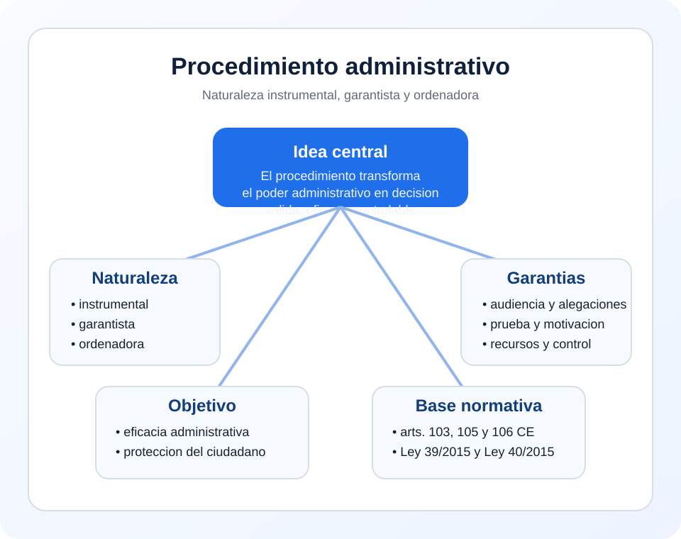

Institucion juridico-publica
Forma parte del Derecho publico porque organiza el ejercicio de potestades administrativas y la relacion con los ciudadanos.
Tema 1 · Punto 3.1
El procedimiento administrativo es el cauce juridico formal a traves del cual la Administracion forma su voluntad, ordena su actuacion y adopta decisiones con efectos sobre los ciudadanos y sobre el interes general. Su naturaleza es la de una institucion juridico-publica de caracter instrumental, garantista y organizativo, mientras que su objetivo es doble: hacer posible una actuacion administrativa eficaz y, al mismo tiempo, proteger los derechos e intereses legitimos de los ciudadanos.
La idea central de este punto es esta: el procedimiento administrativo no es un formalismo vacio. Es el mecanismo que convierte el poder administrativo en un poder juridicamente ordenado, controlable y compatible con el Estado de Derecho.

El procedimiento administrativo puede definirse como la serie ordenada de actos y tramites juridicamente previstos para que la Administracion conozca los hechos, aplique el Derecho, oiga a los interesados y dicte una resolucion conforme al ordenamiento.
No debe confundirse con el acto administrativo. El acto es el resultado o decision final; el procedimiento es el camino juridico que conduce hasta ese resultado. En el Estado de Derecho, la Administracion no decide validamente al margen del procedimiento cuando este es exigible.
La naturaleza del procedimiento administrativo puede comprenderse desde varias perspectivas complementarias.
Forma parte del Derecho publico porque organiza el ejercicio de potestades administrativas y la relacion con los ciudadanos.
Sirve para preparar y canalizar la decision administrativa, evitando improvisacion y arbitrariedad.
No solo ordena tramites; protege derechos de defensa, audiencia, prueba y motivacion.
Deja rastro juridico de como se ha decidido, lo que facilita recursos y control judicial posterior.
Por eso se dice que su naturaleza es al mismo tiempo instrumental, garantista y ordenadora.
El procedimiento existe porque la Administracion ejerce poder publico y ese poder debe estar juridicamente canalizado. Si la Administracion pudiera decidir de manera inmediata, sin tramites ni reglas, el riesgo de arbitrariedad seria muy alto y la defensa del ciudadano quedaria debilitada.
El procedimiento administrativo existe porque la Administracion no puede actuar validamente como una voluntad desnuda: debe actuar como una voluntad juridicamente formada.
Aunque pueden formularse de muchas maneras, los objetivos fundamentales del procedimiento administrativo son relativamente estables.
| Objetivo | Contenido | Consecuencia practica |
|---|---|---|
| Eficacia | Permitir que la Administracion actue de manera ordenada y util para el interes general | Evita desorganizacion y decisiones improvisadas |
| Garantia | Proteger derechos e intereses legitimos de los ciudadanos | Hace posible audiencia, defensa, prueba y recursos |
| Legalidad | Asegurar que la decision nace conforme a competencia, forma y procedimiento | Reduce riesgos de nulidad o anulabilidad |
| Transparencia y control | Documentar el camino seguido por la Administracion | Facilita motivacion y control jurisdiccional |
Esta es una de las dimensiones mas importantes del procedimiento administrativo. La Administracion ocupa una posicion juridica fuerte, y el procedimiento sirve para equilibrar esa posicion mediante garantias formales y materiales.
Gracias a estas garantias, el procedimiento no solo organiza la actuacion administrativa, sino que protege al ciudadano frente a decisiones infundadas, precipitadas o arbitrarias.
El procedimiento no debe estudiarse solo como garantia defensiva. Tambien es una herramienta para que la Administracion actue con eficacia, racionalidad y coherencia. Una buena administracion necesita un procedimiento bien estructurado.
Define secuencias, tramites, informes y plazos, reduciendo desorden y duplicidades.
La decision es mas solida cuando se ha instruido el expediente y se han valorado datos relevantes.
Los ciudadanos saben que cauce seguir y que pasos debe respetar la Administracion.
El expediente deja constancia util para supervisar, revisar y corregir errores.
Sin procedimiento, la Administracion seria menos garantista; pero tambien seria menos eficaz, menos racional y menos previsible.
El procedimiento es una tecnica de ordenacion del poder. Gracias a el, la actuacion administrativa se articula en fases o momentos reconocibles: iniciacion, instruccion, audiencia, propuesta, resolucion, notificacion, ejecucion y, en su caso, revision.
Cada una de estas fases cumple una funcion:
Esta estructura no es un simple esquema didactico; es la forma concreta en que el ordenamiento disciplina la produccion de decisiones administrativas validas.
La naturaleza y el objetivo del procedimiento administrativo descansan sobre una base constitucional y legal clara.
El art. 103 CE exige que la Administracion actue con sometimiento pleno a la ley y al Derecho. El art. 105 CE conecta directamente con la audiencia de los interesados y con otras garantias procedimentales. El art. 106 CE asegura el control judicial.
Esta ley regula el procedimiento administrativo comun y constituye la expresion legislativa principal de esa naturaleza garantista y ordenadora del procedimiento.
Complementa la anterior al fijar principios de organizacion y funcionamiento del sector publico, estrechamente ligados al modo en que se desarrolla la actividad procedimental.
En todos estos ejemplos se repite la misma idea: el procedimiento hace posible una decision mas correcta y mas defendible juridicamente.
Este apartado es nuclear para todo el estudio posterior. Si se comprende bien la naturaleza y el objetivo del procedimiento, se entienden mejor instituciones como la iniciacion, la instruccion, la audiencia, la terminacion, la notificacion, los recursos o la revision.
La Ley 39/2015 no debe memorizarse como una lista de tramites aislados. Debe leerse como el estatuto general del cauce juridico mediante el cual la Administracion actua de forma valida, eficaz y respetuosa con los derechos de los ciudadanos.
Definicion util: el procedimiento administrativo es la serie ordenada de tramites juridicamente previstos a traves de los cuales la Administracion conoce los hechos, aplica el Derecho, garantiza la participacion del interesado y adopta una resolucion valida y controlable.
Formula corta para memorizar: cauce juridico, eficacia, garantias, legalidad y control.
El contenido de esta pagina combina explicacion doctrinal y sistematizacion propia con apoyo en normas oficiales del Boletin Oficial del Estado. La caracterizacion general del procedimiento como institucion juridica es una sintesis explicativa construida a partir del marco constitucional y legal vigente.